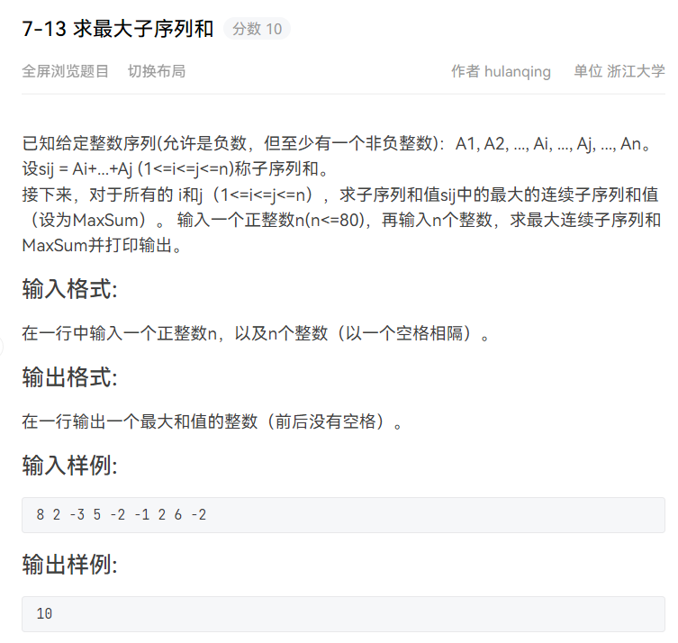
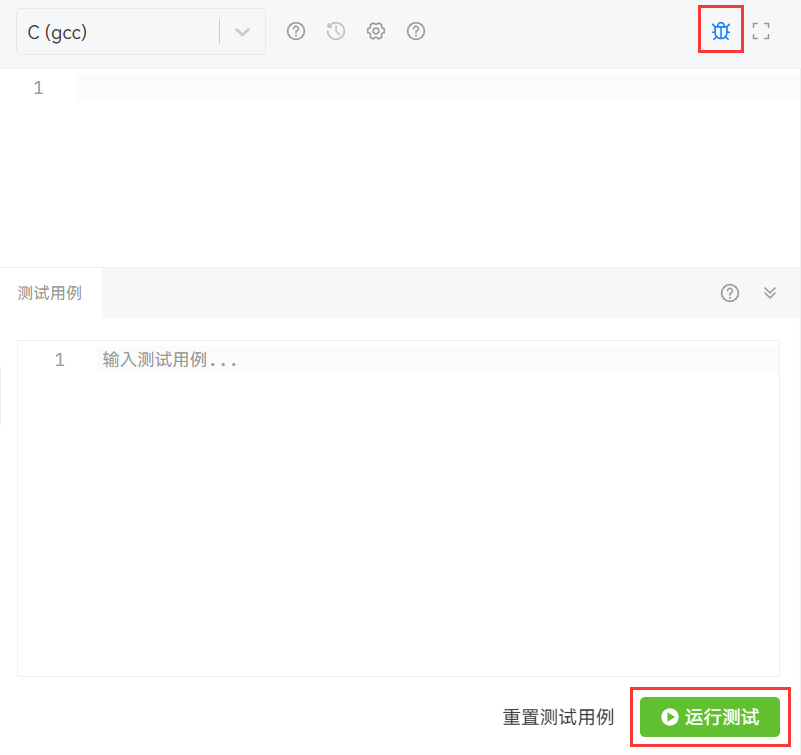

一份面向所有初学/入门 C 语言学生的指南。本文旨在帮助读者快速降低编(zuo)程(ti)难度，而不会涉及过多 C 语言语法知识。
上课可不会讲
如果你还不知道在哪里可以编写代码并运行，那么请参考我的另一篇文章：DevC++ 使用指南。
如果你已经对 C 语言有所熟悉，希望使用更强大的工具进行代码的编辑，那可以参考另一位前辈的文章：写给小白的环境配置指南（未完结）。
Get Started：代码风格
代码风格好不好就像字写得好不好看一样，如果一个公司招聘文职人员，肯定不要字写得难看的，同理，代码风格糟糕的程序员肯定也是不称职的。虽然编译器不会挑剔难看的代码，只要语法没问题照样能编译通过并运行，但是你并不一定每次都会写出 bugfree 的代码——当你得到错误结果并回过头来 debug 的时候，自己肯定受不了，都不知道自己写的是什么，更别说看出哪里出错了。
而一段可读性非常高的代码不但有助于 debug，即使出错了查错也会很方便，还能让完全没接触过这段代码的人（助教）快速读懂。程序的格式追求清晰、美观，是程序风格的重要构成元素。这也是为什么把这一块放在最前面的原因。
不得不多提一句，编码风格是非常个人化的，我的观点仅供参考，但在做好准备敲一段优雅的代码前，至少考虑这里提出的观点。根据个人经验及参考互联网上各大博主文章，对初学者而言，培养良好的代码风格需要关注（但不限于）以下几点👇
缩进与空格
代码美不美观，就看缩进到不到位。目前有非常多成体系的缩进规范，如 Google Style、Allman 等等。对初学者而言，虽说不一定要严格按照规范来，但你的“自定义风格”至少要将缩进统一且清楚。目前总能看到大家写成类似下面这种样子👇
1 | // 错误示范 1 |
1 的代码虽然统一了缩进，但写得过于紧凑，代码密度太大，看着很费劲；2 的代码比 1 稍微松弛了些，但缩进是乱的，看不出来哪个 { 和哪个 } 配对。两种代码的可读性都非常低。如果我是编程老师，遇到这种代码一定看的脑溢血😫(os:我 ppt 上可没这样写代码)
在 Google Style 下，上面的代码能改写成这个样子👇
1 | if (hours < 24 && minutes < 60 && seconds < 60) { |
对比以上两种代码，显然是后者阅读起来更舒服吧。
这只是一个简单的示范，C/C++ 语言对代码缩进与空格的具体规则大概有以下几点：
关键字
if、while、for与其后的(之间需插入一个空格分隔，以突出关键字，但括号内的表达式应紧贴括号。在部分代码规范中，)与{之间也需插入一个空格分隔，例如👇1
2
3while (1) {
...
}if/else、while、do/while、for、switch、函数这些可以带语句块的语句，语句块的{或}应该和关键字写在同一行，用空格隔开。同时，{ }之内的代码要向右缩进一个 Tab，同一地位的要左对齐，地位不同的继续缩进。例如👇1
2
3
4
5
6
7
8
9if (...) { // 判断表达式用...代替，下同
if (...) {
} else {
}
} else if (...) {
}当然这样写也是可以的👇
1
2
3
4
5
6
7
8if (...)
{
}
else if (...)
{
}这两种写法用得都很广泛，只要在同一个项目中保持统一就行。
当然，像
if,for,while这些关键字之后的大括号并不是必要的，但如果不加大括号，则只识别最近的那一句。往往有些初学者偷懒不加大括号，出错了也不知道为什么。下面这两块代码是等价的👇1
2
3
4
5
6
7
8
9
10
11
12if (...)
语句 a
语句 b
语句 c
//-------等价于-------//
if (...) {
语句 a
}
语句 b
语句 c双目运算符的两侧需各插入一个空格分隔，单目运算符、数组括号和操作数之间不加空格，例如👇
1
2
3
4i = i + 1;
i++;
i -= 1;
!(i < 1);有时候为了突出运算符优先级也可以写得更紧凑一些，应灵活应对，例如👇
1
distance = sqrt(x*x + y*y)
,和;之后要加空格（这是英文书写习惯），例如👇1
2
3for (i = 0; i < n; i++) {
printf("%d", i);
}代码中每个相对独立的逻辑段落之间，比如各函数定义之间，头文件、全局变量定义和函数定义之间，函数内部各语句块之间，应该插入空行分隔。空行得体将使程序的布局更加清晰，且不会浪费内存（虽然打印含有空行的程序会多消耗一些纸张，但是值得）。例如👇
1
2
3
4
5
6
7
8
9
10
11
12
13
14
15
16
17
18
19
20
21
22
int a;
double b;
void foo() {
}
int bar(int a) {
}
int main() {
int a;
语句块 1
语句块 2
return 0;
}
一般的编辑器都会在输入左括号时自动补充右括号，且敲回车后会自动进行缩进。如果希望人为控制缩进，可以鼠标点击一行并按 Tab 键。你甚至可以选中一段代码后按 Tab 键以使选中的这段同时进行一个制表符的缩进。与缩进相反的是“退格”，用快捷键 shift + Tab 即可做到（Windows 和 Mac 都是这样）。
变量命名
初学者往往喜欢这样命名：或是单个英文字母，或是拼音，或是拼音首字母的缩写。看到这样的命名，我往往需要费一些力气根据前后代码来理解这个变量是做什么的，恐怕只有写代码的人（还真不一定🤣）能看懂。比如👇
1 | int f(int a, int b) { |
当看到 gys 这样一个无法理解的变量名（总之它不是任何英文单词缩写），我会尝试看函数 f 是干嘛的……这里还是比较好看懂的，f 是辗转相除法求最大公因数。那么 gys……噢原来是公因数的缩写。
普遍认为，标识符命名要清晰明了，可以使用完整的单词和易于理解的缩写。当然这一条规则并不包括拼音——有针对中国程序员的一条特别规定：禁止用拼音做标识符，可读性极差。
不是我不爱中国汉字，只是你用输入法敲 gys 得到的汉字组合太多了，供应商？更衣室？还是观音山？😢
关于缩写，短的单词可以通过去元音形成缩写，较长的单词可以取单词的头几个字母形成缩写，例如 count 写成 cnt，length 写成 len，message 写成 msg，number 写成 num，temporary 可以写成 temp，也可以进一步写成 tmp，等等。
关于变量命名规则，一般主流的有以下几种👇
| 命名规则 | 描述 | 举例 |
|---|---|---|
| 小驼峰命名法 | 第一个单词首字母小写，后面其他单词首字母大写 | int fooBar; |
| 大驼峰命名法 | 所有单词首字母均大写 | int FooBar; |
| 下划线命名法 | 名称中的每一个逻辑断点都用一个下划线来标记 | int foo_bar |
| 匈牙利命名法 | 变量名 = 属性 + 类型 + 对象描述 | int iFooBar |
Linux 内核风格常用下划线命名法，Windows C/C++ 中函数使用大驼峰命名法，变量使用小驼峰命名法。
目前大多数 IDE 会帮我们识别变量的属性，所以基本没人用匈牙利命名法了。和缩进一样，同一个项目中的命名规则应该统一。
根据上述结论，最大公因数就可以命名为 GreatestCommonDivisor，也可以简单写作 GCD or gcd。尽管在命名变量时会花一些时间去打字，但目前大部分编辑器都自带代码补全功能——你输入 g, r, e 三个字母后就可以敲回车把整个变量给打出来了。
另外，全局变量和全局函数的命名一定要详细。因为它们在整个项目的许多源文件中都会用到，必须让使用者明确这个变量或函数是干什么用的，不要怕麻烦，无非首次命名时多用几个单词多写几个下划线。例如求最大公因数的函数名用下划线命名法应当写作 get_greatest_common_divisor 或 get_gcd。
局部变量和只在一个源文件中调用的内部函数的命名可以简略一些，但不能太短，尽量不要使用单个字母做变量名，除非用 i、j、k 这种做循环变量。
使用 PTA 过程中的常见问题及解决方法
也可点击提交结果处的这个地方进行详细查看👇
格式错误
这是最简单的错误类型，请检查你的程序 printf 结果是否有多余/缺漏的空格/换行。一般题目会指明行末没有多余空格或类似要求。
出现这种问题请尽可能独立解决，而不是求助助教/老师，因为他们在处理这个问题的水平上并不会比你高太多。
浮点错误
请检查你的程序是否出现了除以 0 的情况。
运行时错误
请检查你的程序是否发生了数组越界访问，例如👇
1 | int nums[10]; |
段错误
同样也有可能是数组越界访问，但和前者不同之处在于，这里可能访问了不可访问的那块内存。
当然段错误更可能发生在错误使用指针的场景下，对初学者而言，最常见的是 scanf 函数的参数未加取地址符 &。例如👇
1 | int n; |
如果没有，则可能是你的某一递归函数未正确结束。比如求阶乘的代码，当你调用 getFactorial(0) 的时候，这段代码会无限递归，最终返回段错误。如下所示👇
1 | int getFactorial(int n) { |
运行超时
在作业题求最大子序列和中，如果你尝试用暴力解法（\(O(n^3)\)），则会报出该错误。

意思是你的代码耗时过多，甚至超过了题目规定的时间限制。此时需要对代码进行一些优化，省去不必要的循环操作（我认为对初学者而言优化算法是比较难的，实在搞不定就求助 CSDN 吧）。
编译错误
说明你的代码未能被编译器正确通过，完全无法运行。但好在 PTA 会给你编译器 error 信息，比如这样的代码👇
1 |
|
这段代码显然是漏洞百出的。编译器于是会输出这样一串信息👇
1 | a.c: In function ‘main’: |
一句报错信息由以下几部分组成：行号、列号、报错原因、实际位置。
比如这一句错误信息旨在提示我们：第 3 行第 9 列处的变量 i 未定义（undeclared）。
1 | a.c:3:9: error: ‘i’ undeclared (first use in this function) |
而这一句是为了告诉我们：在第 7 行第 1 列处的 } 之前的某处需要加上 ;。
1 | a.c:7:1: error: expected ‘;’ before ‘}’ token |
报错信息其实并不难看懂，只要你写的代码足够烂（这并不是一件值得夸赞的事），你就能见识到各种各样的报错信息，尽管你的英文水平或许并不那么出色，但见多了也就记住了，实在不行，咱们还有各种翻译软件。一般来说，只要知道报错处的行号与列号就能很快找到问题所在，前提是你的代码能够像最开始说的那样足够规范🤔。
答案错误
我愿称之为最难的错误😱
最开始写的时候会告诉你测试点都是什么，后面就不会了。事实上是不会告诉你测试点是啥的，要你自己测试并判断。最常见的 Sample 等价是指，测试数据和样例近似，可能是改动若干数字或调整顺序，但绝不会和样例一模一样——不然你直接把输出样例 printf 出来不就能得分了？所以并不一定用了题目给的输入，结果和题目给的输出一样就觉得自己全对了，一个 bugfree 的代码要考量的 corner case 还是非常多的。
比如给定日期求这是一年中的第几天，如果不考虑闰年的 2 月有 29 天这种 corner case，那一定是无法全通过的。当然，在闰年的判断中，还需要特别关注那些能被 400 整除的年份。
这就要求我们掌握自己编写测试用例的能力。在像 DEV-C++ 这种 IDE 中，我们可以利用其自带的调试功能进行 debug。但 PTA 没有调试功能。如果想仅通过 PTA 进行 debug，最简单的做法自然是利用它的测试区。

输入一段符合题目规定的数据，再点击运行测试，你就可以得到程序的所有打印输出。而且，如果把题给的输入样例直接复制过来进行测试，则会显示你的代码输出与输出样例之间的差异。
但有的时候我们希望能像 IDE 的调试功能那样查看每一步的中间变量是什么样的，开发过程中的做法是输出 LOG，对于初学者而言，则可以直接在合适的位置使用 printf 来查看当前状态下某一变量的值，最后运行测试的时候看一下输出，就知道在你添加 printf 的地方那些个变量都是啥样的。
很常用的做法是这样的👇
1 | int nums[MAXN]; |
当然，这只是一个示范。
最后你需要把这些调试用代码给删除，如果你不确定后续是否会继续用到，那请尽量使用快捷键 ctrl + / 将这段代码注释掉，同样的快捷键可以将注释行取消注释。
如果你选择直接
Backspace删除，万一提交后发现代码还是有问题，需要重新用这段代码进行调试，那你要么重新打一遍，要么用ctrl + z进行撤回，但显然这费力不讨好。
How To Ask A Question
一般性的可参考这个主页。
截图而不是拍照
任何人看到用手机拍电脑屏幕照片的行为都会给你发这张图：
手机拍屏幕会产生令人看着非常不适的摩尔纹——没人喜欢看这种照片。如果你是 Win10 用户，请使用快捷键 win + shift + s 进行截图；如果你是 Mac 用户，请使用快捷键 command + shift + 4 进行截图。粘贴到钉钉/QQ/微信/其它软件的输入框，再发送给你想问的人。
更好地提问
现在你已经学会如何写出优美的代码，并且学会用截图而不是拍照的方式进行提问了，做到这一步，你已经超越了绝大多数的初学者。
但，如果你只是将提交结果截图，然后问一句“哪里错了？”，“为什么不对？”。对于简短的代码这是可以容忍的，但随着学习的深入，写题所需代码量会越来越大，我想水平再高的人遇到这样的问题短时间内都无从下手。尤其是，你从一些独特的角度切入题目，写出了非同寻常的解法，但 TA 并没有那么快 get 到你的点，就需要费一些劲来理解你的思路。如果你能像👇这么做，不但能节省 TA 的时间，还能更快得到你想要的解答：
- 请准确、具体、简洁、完整地表述你遇到的问题；
- 必须附上相关代码；
- 如果是格式错误，请自行检查；
- 如果是编译错误，请附上编译器报错信息；
- 如果是答案错误，请不要仅仅给 TA 看你的代码 + 提交结果，然后问为什么答案错误。PTA 上的用例不是 TA 出的，TA 也不知道这个用例具体是哪一些数据，TA 能做的只有肉眼 debug，有的代码不一定能很快看出问题，还需要把代码拿到本地自己运行一遍——这相当费时。所以，请尽量先尝试自定义 sample 并测试，然后把测试结果和你的解题思路发给 TA。当然，最好可以像上文提到的那样，打印中间变量，方便回答者，同时也说明你自己尝试过；
- 如果可以，请为你的代码添加一些简单的注释，如某个变量/函数/代码段的作用；
- 得到想要的答案后，不要吝啬感谢😃
一个糟糕问题的例子😡
为什么这样？
（一大段代码截图）
一个好问题的例子😀
当局部变量与全局变量取同一个名字时，优先服从谁？
（相关代码截图）
一个更好问题的例子🥰
C 语言中，当局部变量与全局变量取同一个名字时，优先服从谁？这是我的输出结果。
（相关代码截图）（运行结果截图，有相关变量的输出）
最后，提问的本质还是思考 。如果你能提出一个好问题，必定是对问题思考后的结果。这对你本身也是一种锻炼。不思考就直接提问，既浪费了锻炼的机会，也很难得到满意答复。但不是说不应该提问，相反，该问还得问， 要敢于提问和讨论，不但要问，还要回答。当你能向别人解释清楚一个东西时，才是你真的理解了它。何乐而不为？
写优雅的代码
代码的缩进和空格是优美的外表，而代码的简洁和干练是优雅的灵魂。所谓好看的皮囊千篇一律，有趣的灵魂万里挑一，如何写出优雅的代码，这是程序员入门必须要思考的一件事。
如果你只是为了通过这门课，那可以忽略。
定义时赋值
请将这一类代码
1 | int a; |
尽量改为
1 | int a = 1; |
边输入边输出
PTA 允许边输入边输出的做法。某些情况下无需将所有输入数据保存至数组中再对数组进行处理，可以在输入的过程中进行判断，然后直接输出结果。比如给定一个字母和一个以回车结束的字符串，删除字符串中所有的该字母，然后输出剩下内容。初学者可能会这样写👇
1 |
|
利用 PTA 这一特性，我们可以把上面的代码改写为👇
1 |
|
是否简洁多了？
强大的三目运算符
这是我个人比较喜欢的一个优雅的写法。在某些情况下，可以用条件运算符 ? : 来简化 if 语句。? : 是一个三目运算符，其格式为：<表达式 1> ? <表达式 2> : <表达式 3>，即，如果表达式 1 为真，则执行表达式 2，反之执行表达式 3。以下两段代码是等价的👇
1 | if (表达式 1) { |
所以，求两个数中的最大值就可以写为 maxm = a > b ? a : b。
利用指针传递结果返回值
如果我们想利用函数得到一个输出值，可以写成👇
1 | int foobar(int a, int b) { |
但对于某些问题，比如输入矩形的长和宽，想用一个函数同时得到其周长和面积，这样做显然行不通——每个函数只能返回一个值。要么定义两个函数，要么定义一个结构体，但这都比较繁琐。
考虑到学指针的过程中，有提到可以修改函数外部变量的值，那么我们是否可以在函数外定义好周长和面积的变量，通过指针传参，这样函数内部计算完后就可以直接改变这两个变量的值，从而实现这一功能呢？且看👇
1 |
|
输入为👇时
1 | 3 5 |
得到输出👇
1 | 周长为 16，面积为 15 |